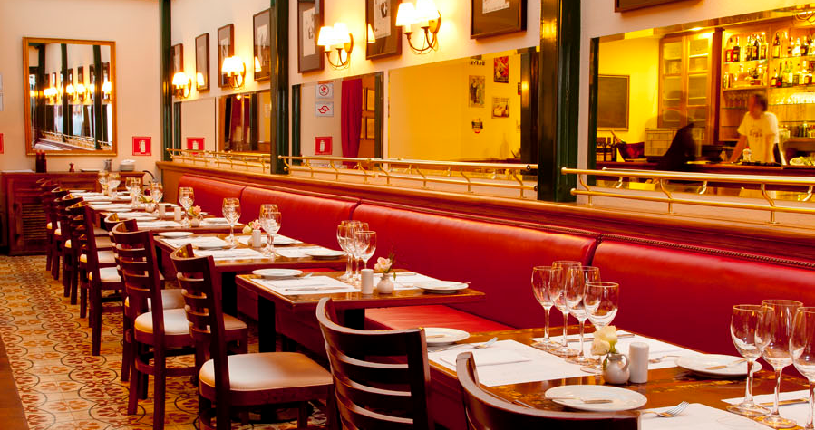

Cafe Fontenebleau

O “Cafe Fontenebleau” é um local, novo de idade e antigo de tradição, onde se bebe um bom vinho enquanto o tempo convidar à tranquilidade de deixar as horas passarem. É um local de boas comidas, petiscos, de sabores e prazeres para os olhos e para o estômago. Um local onde se degusta em Português mas à moda de Braga.
O “Cafe Fontenebleau” inspira-se numa cozinha tradicional, que renasce, no respeito da sabedoria ancestral dos conteúdos.
Um local onde se salta de petisco em petisco, como quem “viaja” de copo em copo, ou de conversa em conversa. Onde se agarram os momentos dos fins de tarde que se consagram aos amigos, aos dois dedos de conversa, ao abandono das preocupações dos dias agitados.